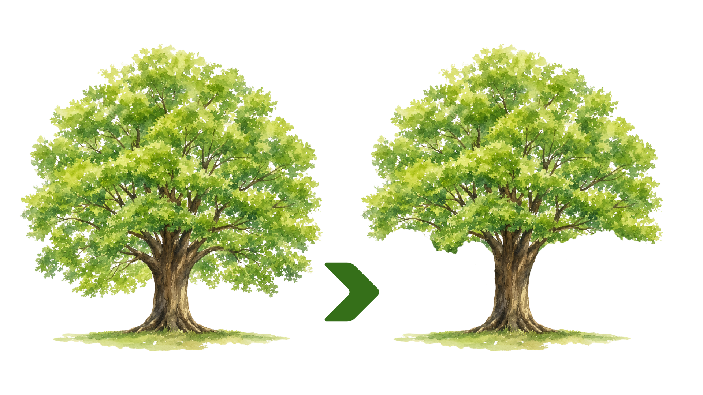
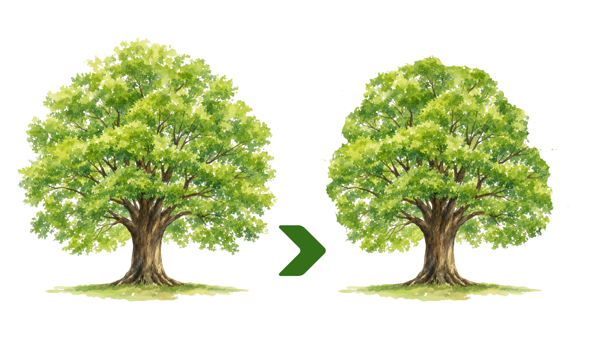
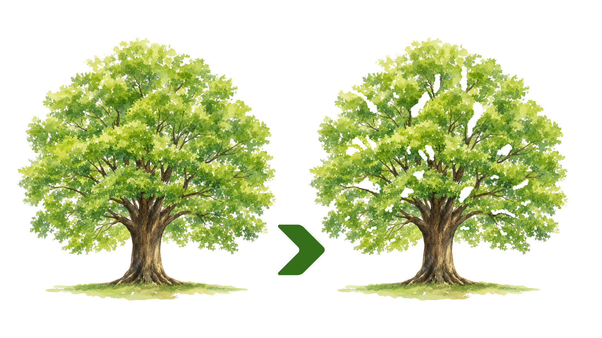
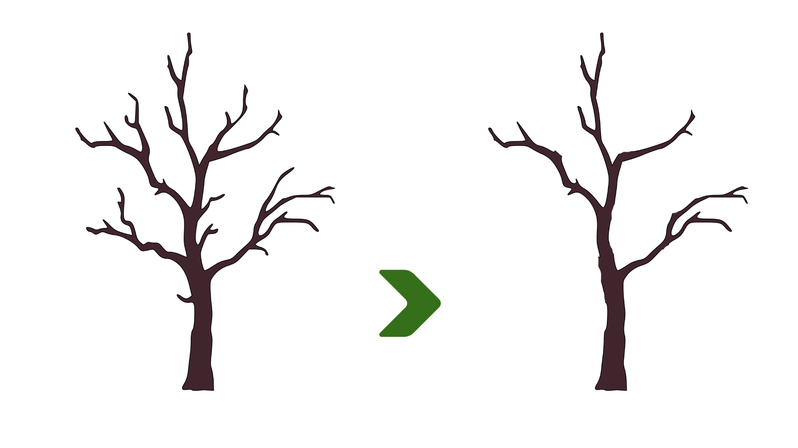
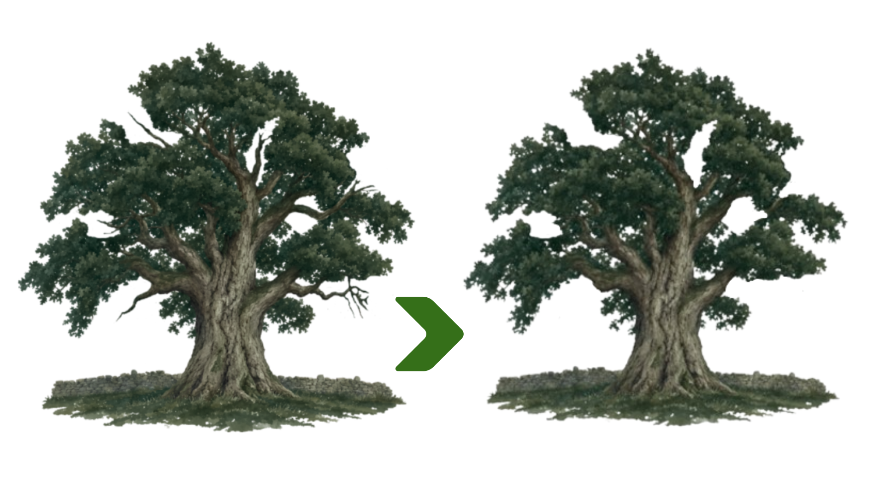
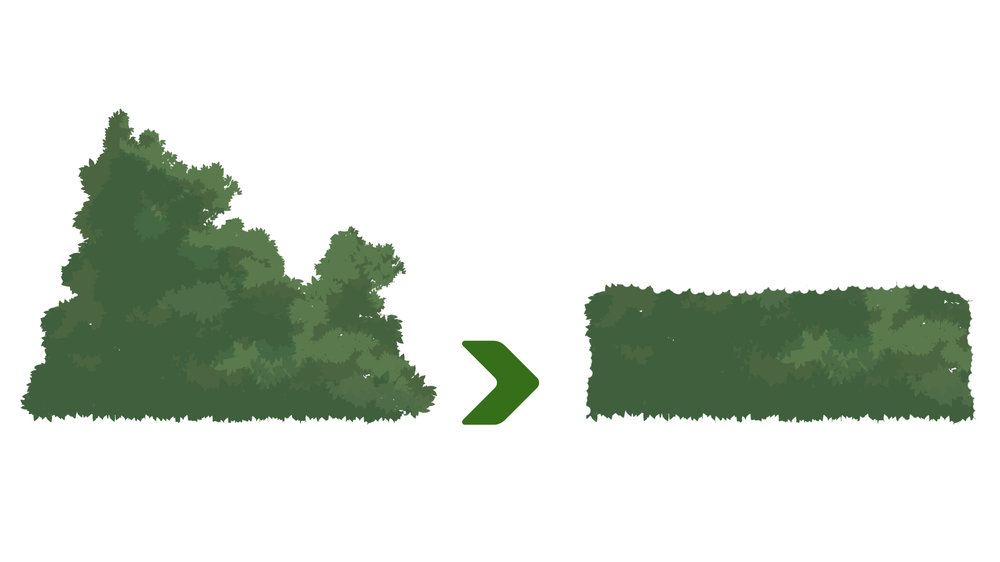

Tree pruning is the selective removal of specific branches, buds, or roots to improve a tree's health, safety, and shape. It includes cutting away dead or diseased wood, eliminating safety hazards, and managing how the tree grows. Proper cuts help the tree heal quickly and grow stronger over time. Sometimes the pruning is necessary and other times its purely aesthetic either way we can prune your tree without causeing harm.
Because trees are living beings they continually grow meaning they need to be pruned regularly, other times a tree may need to be pruned severly which would cause harm if pruned in one sitting. In both these instances you can give us a call and we can set up a pruning schedule that suits you and your trees.

Crown Lifting removes the lower branches from the tree to raise the overall crown/canopy height.

Crown Reductions reduce the length of branchs to make either the crown/canopy height lower, or the overall crown/canopy smaller.

Crown Thinning removes smaller branches from both the outside and inside of the tree to let more light through.

Structural Pruning or Formative Pruning is a method to prune juvenile trees to train it to grow into a healthy structure.

Crown Cleaning removes brances that may be dead, decaying, infected, broken, rubbing or disordered to maintain the health of the tree and safety of those around the tree.

Hedging trims shurbs and select trees into a uniform shape typically for aesthetic purposes.